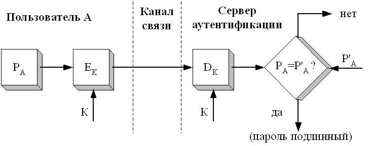
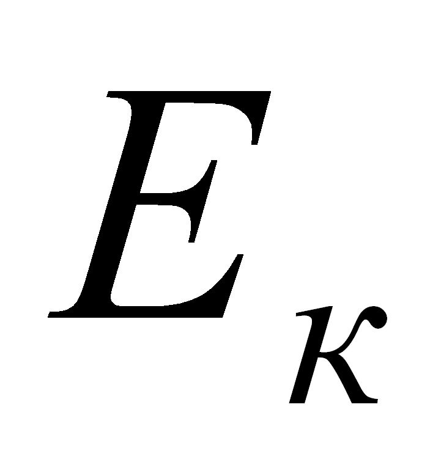
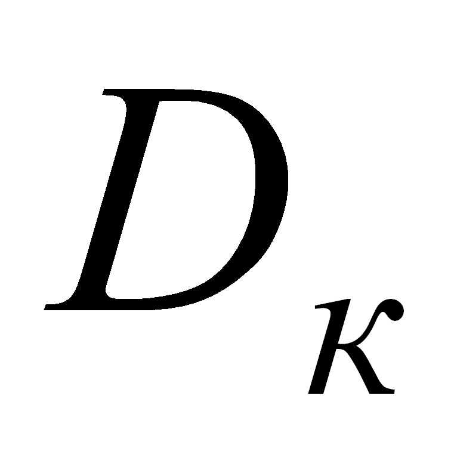
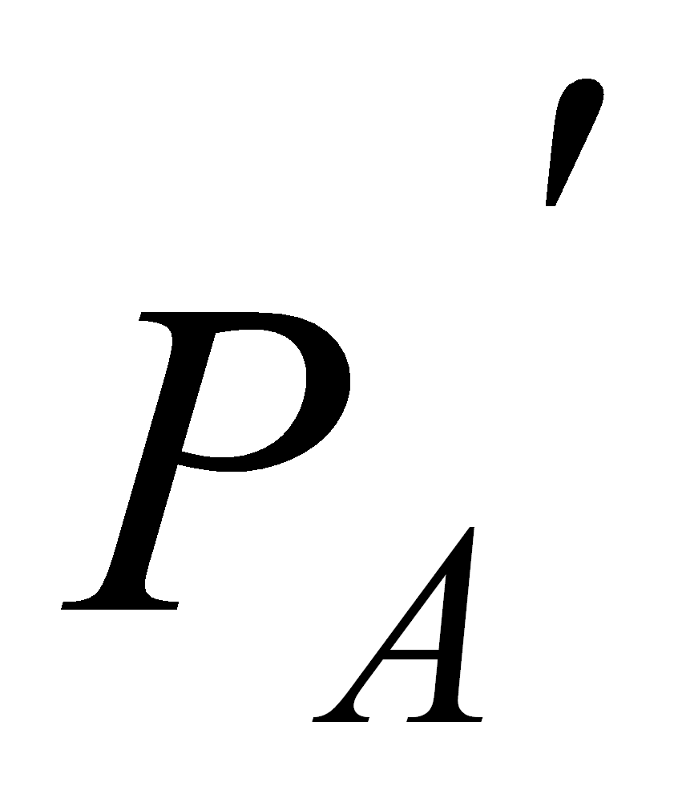
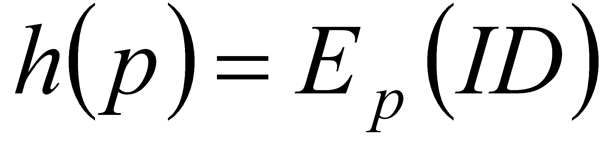
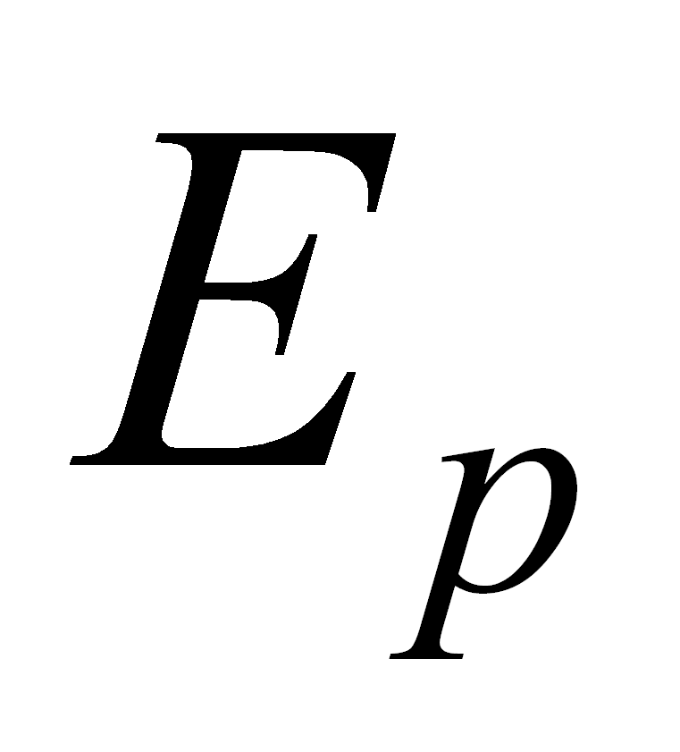
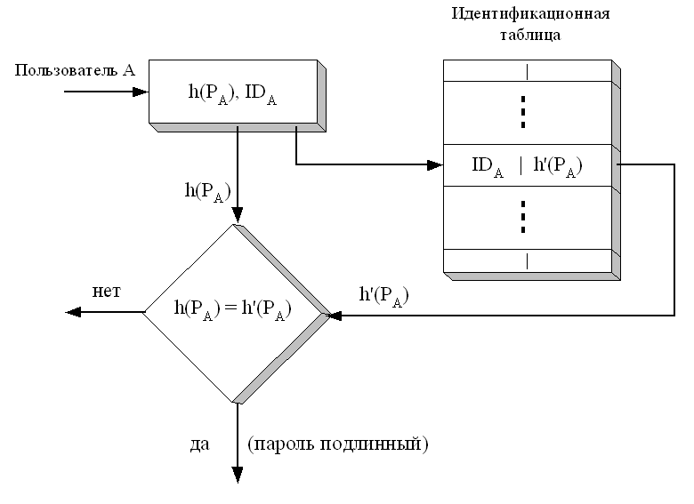

В современных операционных системах (ОС) предусматривается централизованная служба аутентификации, которая выполняется одним из серверов сети и использует для своей работы базу данных. В этой базе данных хранятся учётные данные о пользователях сети, в которые включена информация о идентификаторах и паролях пользователей.
Процедура простой аутентификации пользователя в сети заключается в следующем. При попытке логического входа в сеть пользователь вводит свои идентификатор и пароль, которые поступают для обработки на сервер аутентификации. На сервере аутентификации производится сравнение введённой информации с хранящейся в базе данных и при её соответствии (совпадении) пользователь получает легальный статус.
Способы передачи пароля и идентификации пользователя:
в незашифрованном виде (например, PAP (Password Authentication Protocol) – протокол парольной аутентификации);
в защищённом виде. Все передаваемые данные (идентификатор и пароль пользователя, случайное число и метки времени) защищены посредством шифрования.

Рис. 1. Схема простой аутентификации с использованием пароля
где  – средства шифрования и  – расшифровывания;
 – пароль,
введённый пользователем;
– пароль,
введённый пользователем;
 – исходное значение пароля, хранящегося на сервере аутентификации.
Схемы простой аутентификации отличаются также видом хранения и проверки паролей:
хранение паролей пользователей о открытом виде в системных файлах, защищённых от чтения и записи. Недостаток – возможность получения злоумышленником в системе привилегий администратора;
хранение и передача хэш-функций от паролей пользователей (использование односторонних функций). В этом случае гарантируется невозможность раскрытия пароля по его отображению, так как злоумышленник наталкивается на неразрешимую числовую задачу.
Вариант использования односторонней функции:
,
где – пароль пользователя;
– идентификатор пользователя;
 – процедура шифрования, выполняемая с использованием пароля в качестве ключа.

Рис. 2. Вариант использования односторонней функции
К протоколам аутентификации на основе многоразовых паролей относятся:
PAP (Password Authentication Protocol);
CHAP (Challenge–Handshake Authentication Protocol) – на основе процедуры “запрос–ответ”;
TACACS (Terminal Access Controller Access Control System);
RADIUS (Remote Authentication Dial–In User Service) – протоколы централизованного контроля доступа к сети удалённых пользователей.
Недостатки: схемы аутентификации, основанные на традиционных многоразовых паролях, не обладают достаточной безопасностью. Такие пароли можно перехватить, разгадать, подсмотреть или украсть.
Основные угрозы для подсистемы аутентификации
Существуют две основные угрозы для подсистемы аутентификации – кража пароля и подбор пароля. Для обеспечения надежной защиты от кражи паролей подсистема ОС должна удовлетворять следующим требованиям:
пароль, вводимый пользователем не отображается на экране компьютера;
ввод пароля в командной строке недопустим.
Кроме того пользователи ОС должны быть проинструктированы о:
необходимости хранения паролей в тайне от всех пользователей, а также администраторов ОС;
необходимости немедленной смены пароля после его компрометации;
необходимости регулярной смены пароля;
недопустимости записи пароля на бумаге или в файл.
Методы подбора паролей:
тотальный перебор – в этом случае злоумышленник последовательно опробует все возможные варианты пароля;
тотальный перебор, оптимизированный по статистике встречаемых символов – злоумышленник вначале опробует пароли, состоящие из наиболее часто встречающихся символов, за счет чего время перебора значительно сокращается;
тотальный перебор, оптимизированный с помощью словарей – при использовании данного метода злоумышленник вначале опробует в качестве паролей все слова из словаря, содержащего наиболее вероятный пароли;
подбор пароля с использованием знаний о пользователе.
Защита от компрометации пароля
Будем говорить, что произошла компрометация пароля, если пароль пользователя стал известен некоторому другому пользователю.
Методы уменьшения угрозы компрометации пароля:
Ограничение срока действия пароля. При применении данного метода каждый пользователь обязан менять пароль через определенный интервал времени.
Ограничение на содержание пароля:
длина пароля должна быть не менее 10 символов;
в пароль должны входить цифры, строчные и заглавные символы (должен быть сформирован случайным образом);
пароль не должен присутствовать в списке «плохих паролей».
Блокировка терминала. В случае ошибочного ввода пароля некоторого количества раз происходит блокирование терминала.
Блокировка пользователей. Аналогично предыдущему методу, только происходит блокировка пользователей.
Генерация паролей операционной системой. В этом случае пароли генерируются случайным образом, что крайне затрудняет подбор паролей.
Пароль и отзыв (запрос-ответ) – при использовании этой схемы аутентификации при входе пользователя в систему ОС выдает ему случайное число/строку, на которую пользователь должен дать правильный отзыв;
Разовый пароль. В этом случае пароль пользователя автоматически меняется после каждого успешного входа в систему.